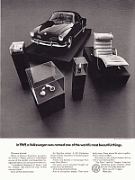

Bluetooth Ericofon (Cobra) - It Works with your Mobile Phone
Wouldn't
be great sitting at your favorite
restaurant or coffee shop with
an original
Ericofon (Cobra),
one of the most
beautiful designed telephone of the 50's, and while
working or talking with your friends this phone rings and it is a call for you?
Or,
picking it up, hearing dial tone, turning its rotary dial on the
bottom and
making a phone call? Or simply, calling one of your friends using your
speed-dial stored numbers?
Specially
designed electronics combined with Bluetooth technology enables using the Ericofon
once again. This Ericofon connects via Bluetooth to your mobile phone,
enabling you to get and make phone calls.
To make
a phone call just lift it up, listen to its dial tone, dial the number using
the rotary dial and talk. You can also redial a number, use speed-dial, voice recognition, text message notifications and
other Features.
A Beautiful Design Product for Art Connoisseurs
Art Connoisseurs recognize the beauty and value of one of the most beautiful designed products from the 50's and 60's. The Ericofon - or Cobra phone - is considered a landmark in plastic industrial design and is part of the collection of the Museum of Modern Art in New York. It is also considered one of the most significant industrial designs of the 20th century, picked by one of the most prolific American industrial designers and architects, Walter Dorwin Teague.
"I considered thousands of things," said Mr. Teague when looking for some of the most beautiful designed products, "but could find only 15 that met my criteria." The Ericofon was one of them.
|  |
These Ericofons aren't any fakes, reproductions, look-alike, or any other kind of knock-off phones; they are the real thing. These phones are carefully restored to look factory fresh and some of them may be even NOS (new old stock) meaning that the shell and/or the rotary mechanism hasn't been ever used.
The Bluetooth Ericofon in the News
This special telephone has been featured in multiple places over the internet and it was recently featured in the most important newspaper in Helsinki (Finland), the Helsingin Sanomat. Click on the picture to read the original article in Finnish, or read an approximate English translation here.
Learn on how to become a proud owner of this original,
functional and unique piece of art.
You can also become a fan of Bluetooth Ericofon in Facebook
(click the icon below) and keep yourself updated with the latest
features and improvements.